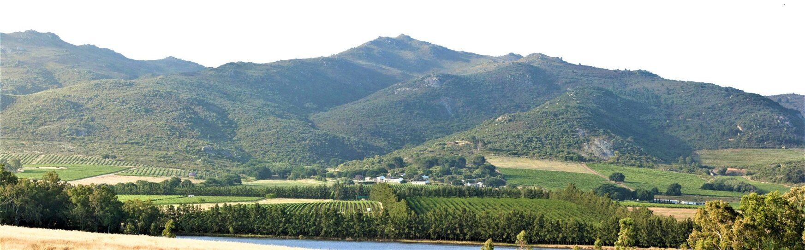
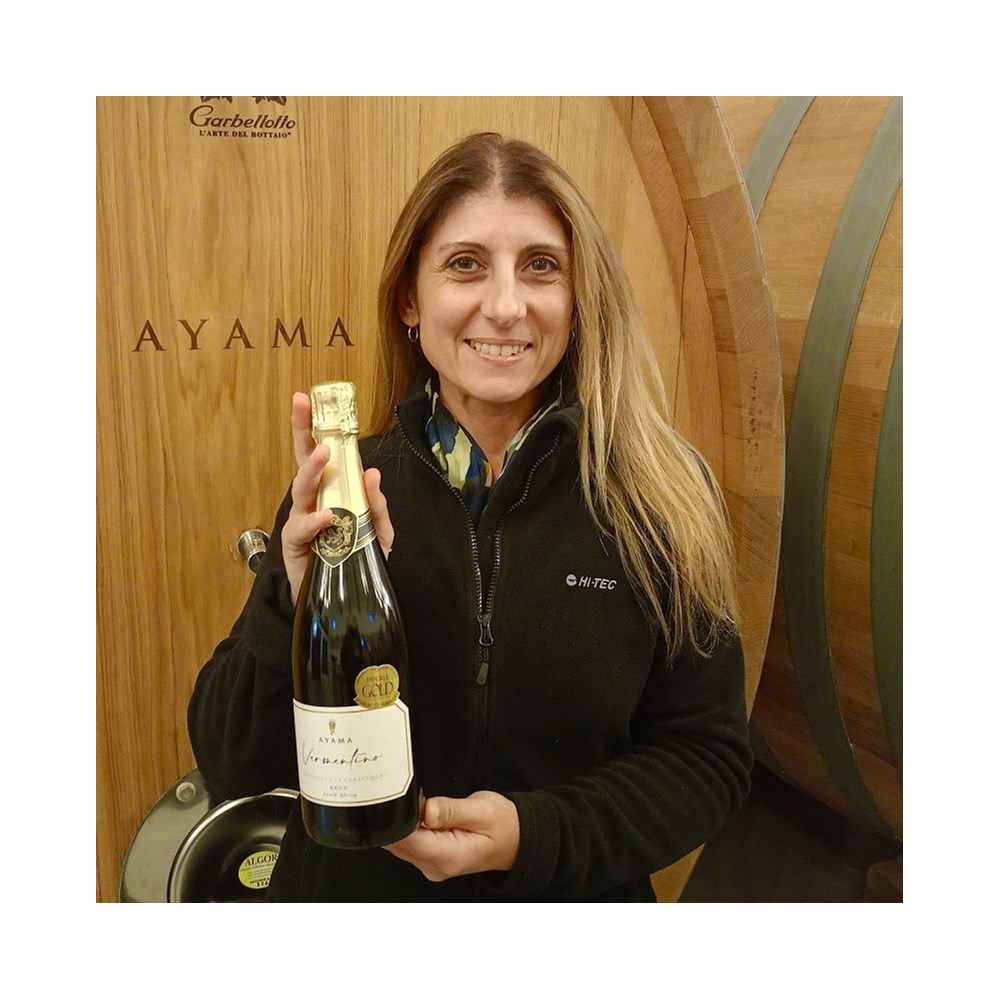
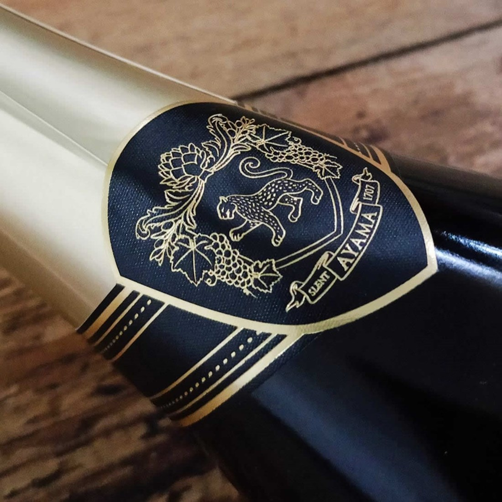

Piglio · Lazio, Italia
Marcella Giuliani
Un capitolo italiano nel territorio del Cesanese. WineNews indica Chiara, insieme a Paolo Peira, tra gli enologi del Dives Riserva 2011 di Marcella Giuliani.
↗Italia → Sudafrica
Chiara Fabietti. Enologa italiana, oggi ad Ayama, nel cuore del Voor Paardeberg.
Un percorso da scoprire

Dalla vigna alla cantina. Dall’Italia al Capo.
La curiosità come filo conduttore.
01 / Il percorso
Il percorso di Chiara attraversa territori diversi: il Cesanese del Piglio, gli antichi vitigni del sud del Lazio, il paesaggio aperto del Western Cape. Al centro, il lavoro dell’enologa: conoscere l’uva e accompagnarne l’espressione.
Piglio · Lazio, Italia
Un capitolo italiano nel territorio del Cesanese. WineNews indica Chiara, insieme a Paolo Peira, tra gli enologi del Dives Riserva 2011 di Marcella Giuliani.
↗Itri e Fondi · Lazio, Italia
La valorizzazione dell’Abbuoto e del suo legame con la terra d’origine. Un’esperienza tra vigna, cantina e degustazioni, raccontata dalla stampa specializzata già negli anni italiani.
↗Dal 2021 · Voor Paardeberg, Sudafrica
Un nuovo emisfero, la stessa professione. Chiara è enologa, direttrice e responsabile della viticoltura di Ayama; con Giuseppe Di Benedetto condivide la direzione della tenuta.
↗02 / L’orizzonte di oggi
Ai piedi del Paardeberg, Ayama mette in dialogo sensibilità italiana e terra sudafricana. È qui che Chiara lavora tra vigneti, cantina e incontri intorno al vino.
Il Vermentino è una delle storie che rendono questo luogo speciale: una varietà mediterranea che trova nel Western Cape una nuova espressione.
Esplora la tenuta Ayama03 / Dal taccuino di cantina

Ayama · 06.06.2025Vermentino · Méthode Cap Classique
Per il primo Vermentino MCC di Ayama, Chiara ha scelto di dividere la vendemmia in due lotti: 12 e 18 mesi sui lieviti. Un confronto presentato in tenuta nel giugno 2025.
3 g/l di zucchero totale dopo il dosaggio
Nel resoconto Ayama: agrumi, fiori bianchi e freschezza. Un’espressione del carattere varietale del Vermentino.
Pas dosé · senza dosaggio
Nel resoconto Ayama: nocciola, crosta di pane e maggiore complessità, insieme alla freschezza aromatica.
My working philosophy in winemaking is founded on the research of expression that hides in every grape variety.
04 / Voci, incontri, letture
Una selezione di articoli e appuntamenti che raccontano il lavoro di Chiara, in Italia e in Sudafrica.
Una conversazione può cominciare da un calice.
Per degustazioni, visite in tenuta e richieste professionali, i canali ufficiali di Ayama sono il punto di partenza.
Contatta la tenutaCollegamenti ai canali aziendali di Ayama.